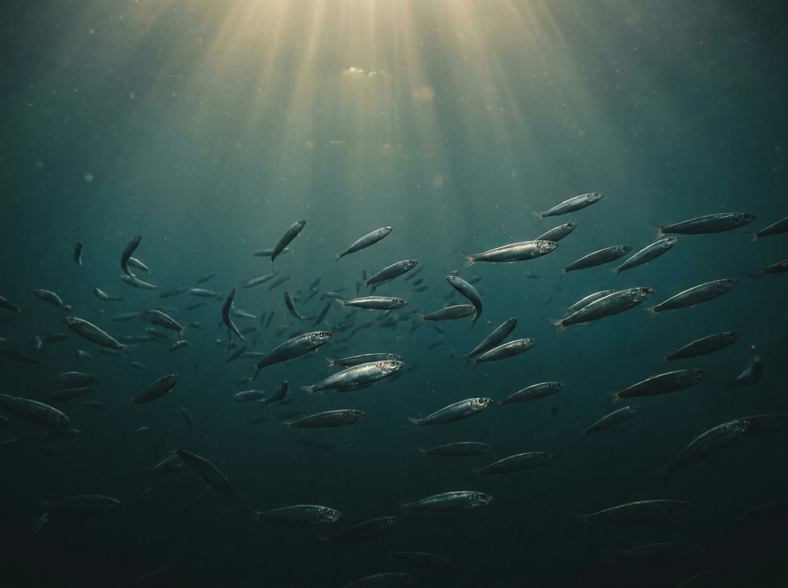
60% · 6,600mg
북해의 자연산 어유
정어리, 고등어, 멸치. 작고 기름진 자연산 생선에서 얻은 어유입니다. 지속 가능한 어획 인증(FOS)을 받았습니다.
THE QUESTION
6조 원 규모의 영양제 시장. 우리는 효과를 기대하며 지갑을 열지만, 정말 몸에 채워졌는지 확인할 방법은 없었습니다. 진지노는 이 질문을 피하지 않습니다.
좋다니까 먹는 건강관리가 아니라,
재보고 관리하는 건강관리.
추측을 걷어내고 수치로 말합니다.
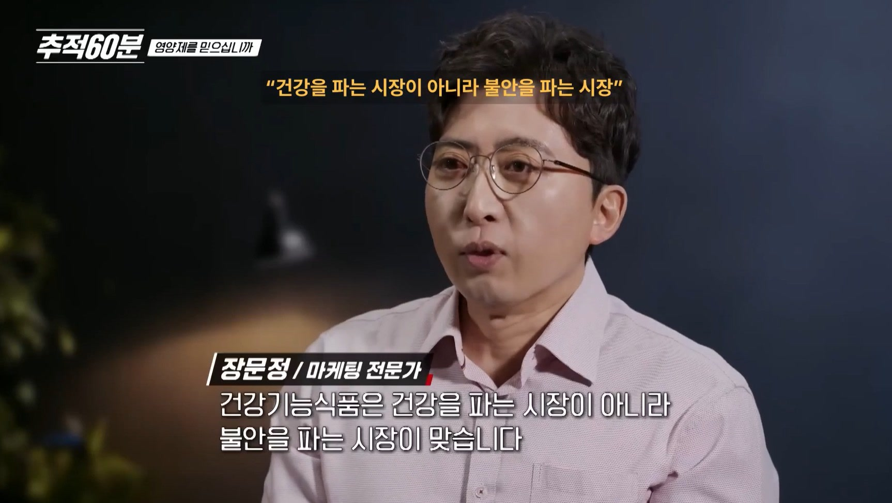
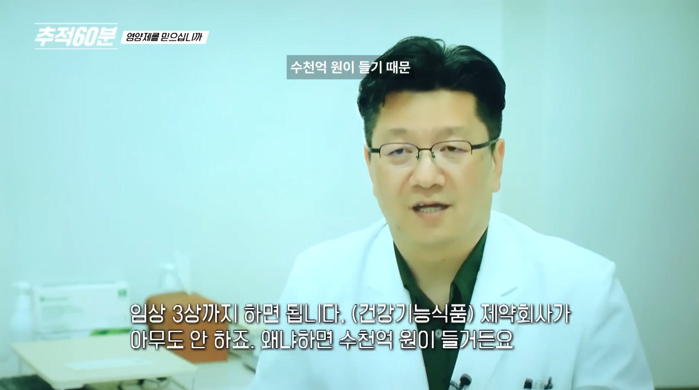
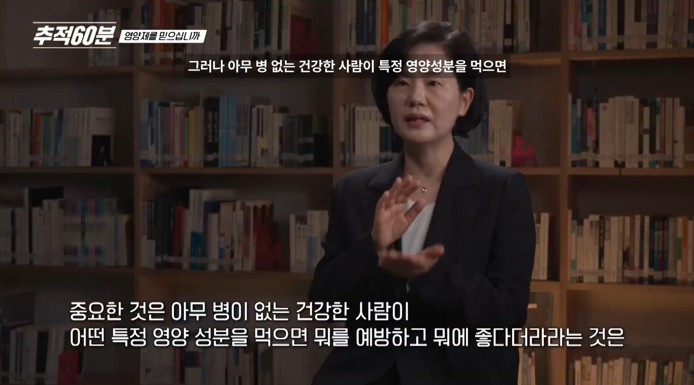
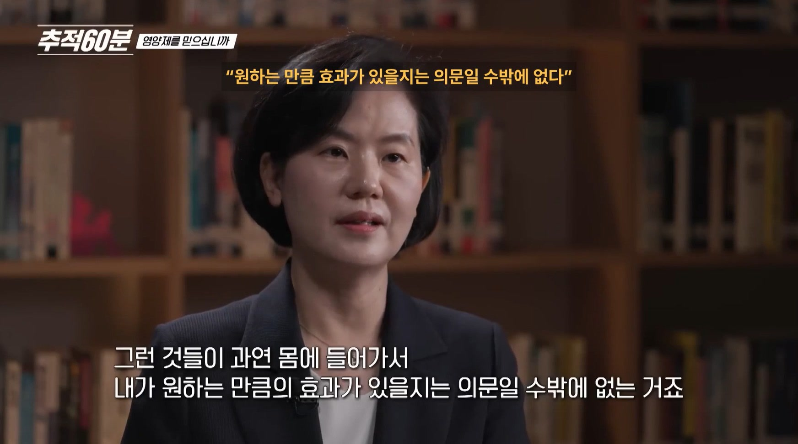
KBS 추적60분 '영양제를 믿으십니까' 방송 화면. 인용 목적으로 게재.
CHECK
건강검진 때마다 중성지방 수치가 신경 쓰인다
모니터 앞에만 앉으면 눈이 뻑뻑해진다
요즘 부쩍 깜빡하는 일이 늘었다
손발이 차고 혈행이 걱정된다
하나라도 해당된다면, 오메가3를 "먹고 있는지"가 아니라 "몸에 채워졌는지"를 확인할 때입니다.
식약처가 인정한 EPA·DHA의 네 가지 기능성이 정확히 이 네 자리를 향합니다.
THE RATIO
전 세계 60억 명이 넘는 사람들이 오메가3가 부족한 상태이고, 시중 오메가3 보충제의 대부분은 효과가 입증되지 않았습니다. 서구식 식단은 오메가6는 넘치게, 오메가3는 모자라게 만듭니다. 현대인의 평균 오메가 6:3 비율은 15:1. 권장되는 균형은 3:1입니다.
진지노가 진행한 검사에서 100명 중 95명이 오메가6는 넘치고 오메가3는 부족한 상태였습니다.
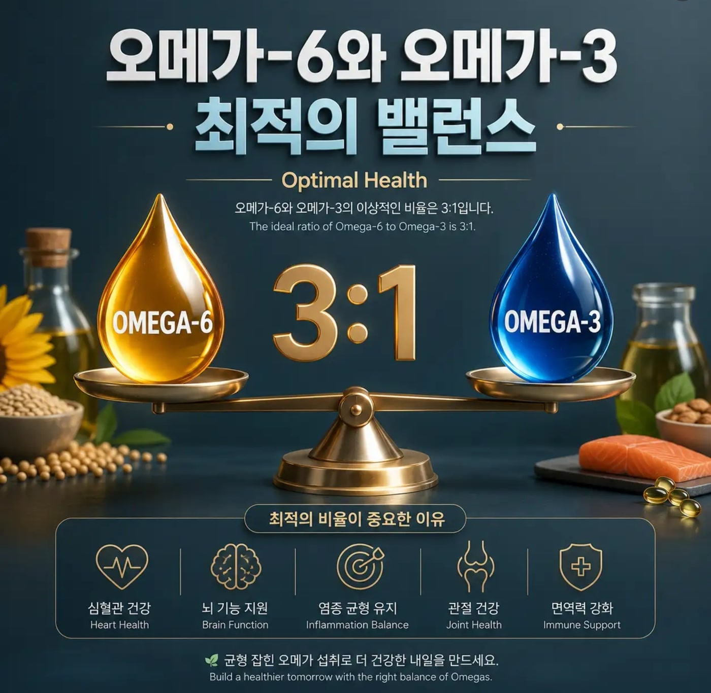
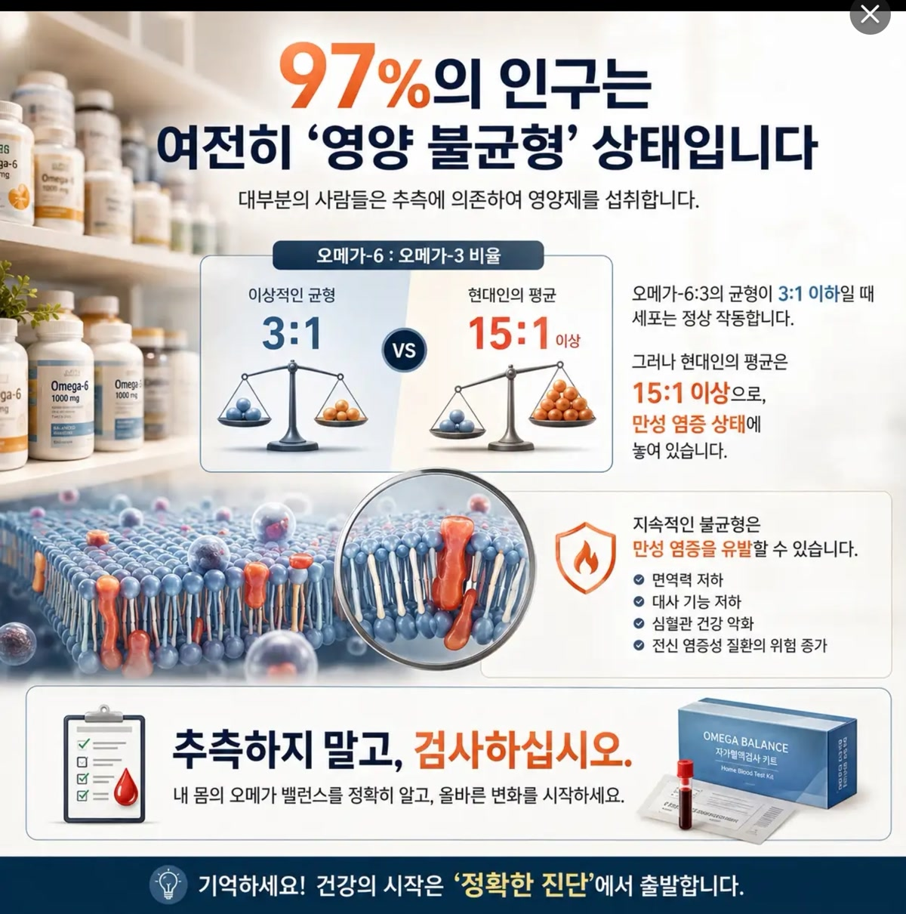
수치 출처: 진지노 글로벌 자료·검사 통계 기준
WHY DIFFERENT
| 보통의 오메가3 | 진지노 밸런스 오일 플러스 | |
|---|---|---|
| 형태 | 캡슐 (EE형이 많음) | 흡수 효율이 높은 액상 TG형 |
| 산화 관리 | 따로 없음 | 조기 수확 올리브 폴리페놀이 산화를 막음 |
| 원료 | 대형어·양식 혼재 | 북해의 소형 자연산 생선, FOS 인증 |
| 하루 함량 | 제품마다 제각각 | 오메가3 2,000mg, 1일 기준치의 600% 이상 |
| 결과 확인 | 느낌으로 짐작 | 혈액검사로 120일 전후 비교 |
함량 기준: 하루 12ml, 진지노 제품 자료 기준
SYNERGY
대부분의 어유는 정제 과정에서 수은과 오염물질을 걸러내면서, 오메가3를 지켜주던 천연 폴리페놀까지 함께 씻어냅니다. 진지노는 조기 수확 올리브의 폴리페놀을 다시 채워 넣었습니다. 어유보다는, 기름진 생선 그대로에 가까운 오일입니다.
폴리페놀이 오일의 산화를 막아 신선함을 지킵니다.
흡수되는 동안에도 필수 지방산을 보호합니다.
세포막을 유연하게 지켜 영양소가 제 몫을 하도록 돕습니다.
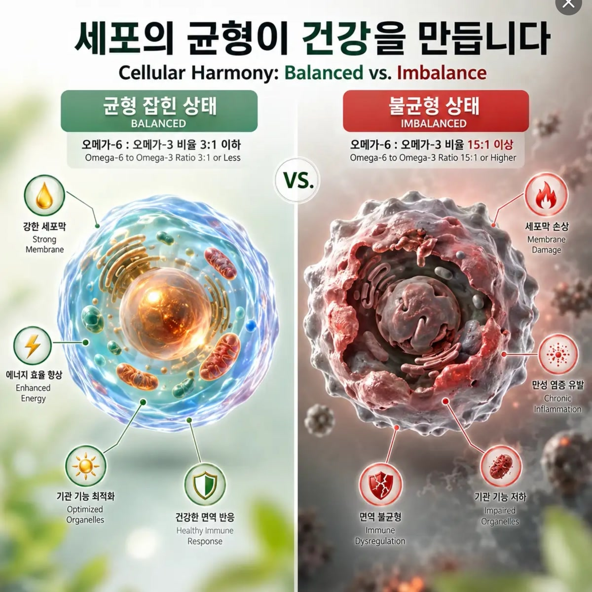
ONE BOTTLE
색소도, 방부제도, 인공 향료도 넣지 않았습니다. 들어간 것은 이 셋이 전부입니다.

60% · 6,600mg
정어리, 고등어, 멸치. 작고 기름진 자연산 생선에서 얻은 어유입니다. 지속 가능한 어획 인증(FOS)을 받았습니다.
40% · 4,000mg
완전히 익기 전에 거둔 초록 올리브로 짠 엑스트라 버진 올리브 오일. 폴리페놀이 오메가3의 산화를 막아줍니다.
20µg
하루 12ml에 비타민 D3 20µg. 오메가3와 함께 섭취하도록 설계된 구성입니다.
하루 12ml에 오메가3 2,000mg · EPA 1,300mg · DHA 700mg · 1일 기준치 600%+ · 인공 색소·향료·방부제 무첨가
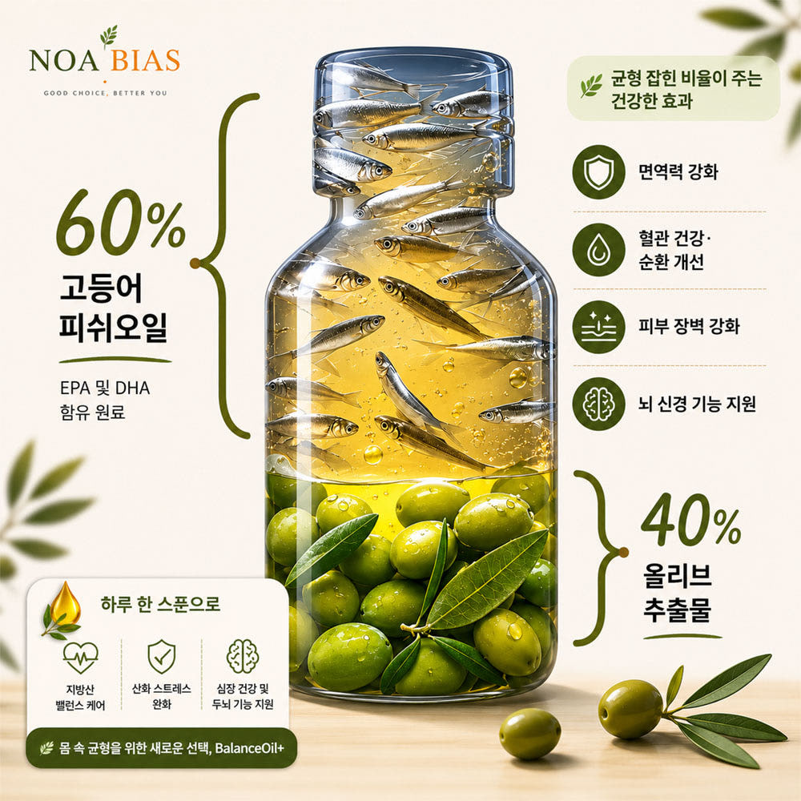
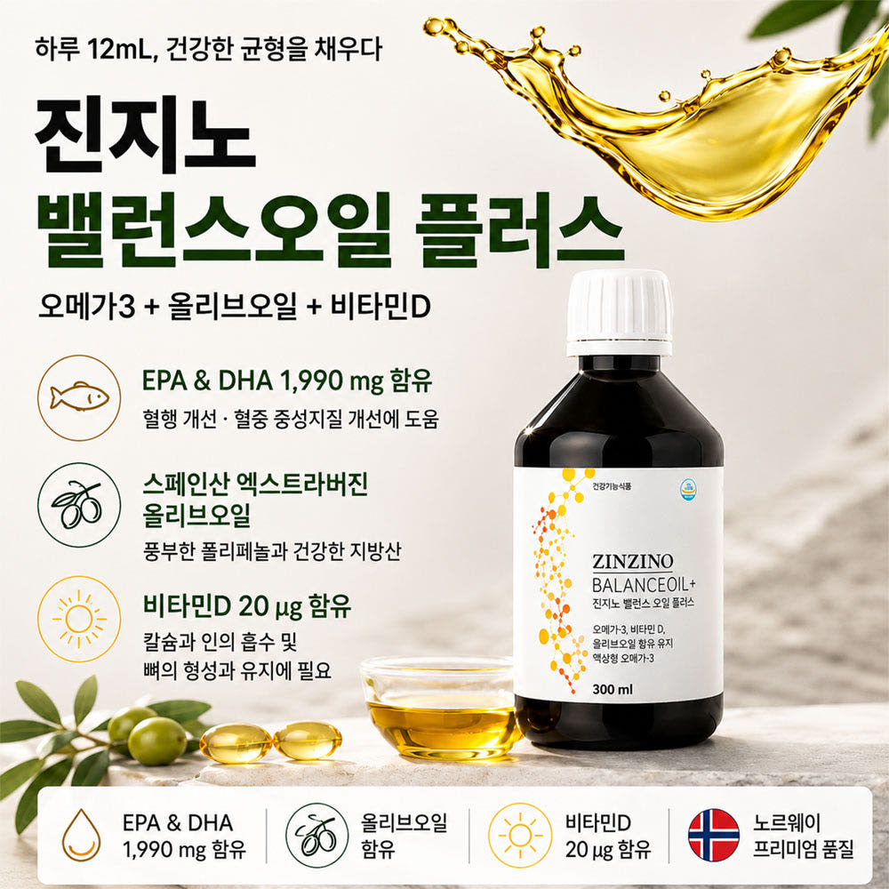
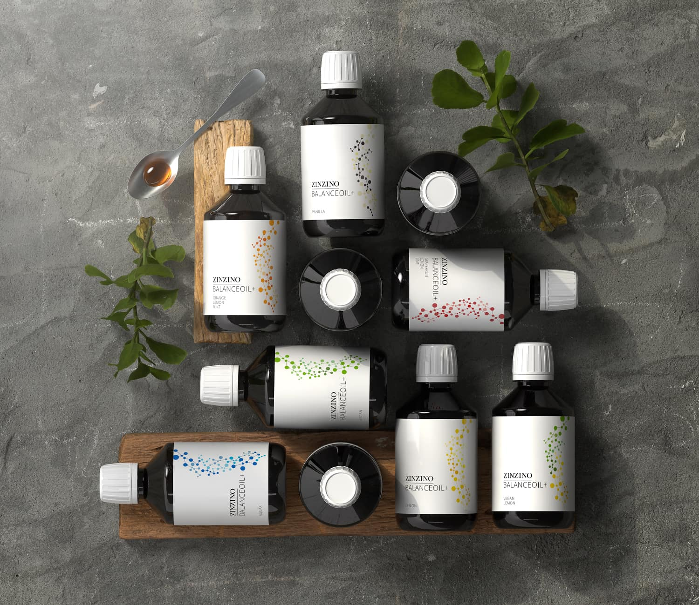
APPROVED
광고 문구가 아니라, 건강기능식품 원료의 기능성으로 등록된 표현 그대로 옮깁니다.
EPA·DHA 함유 유지
EPA·DHA 함유 유지
EPA·DHA 함유 유지
EPA·DHA 함유 유지
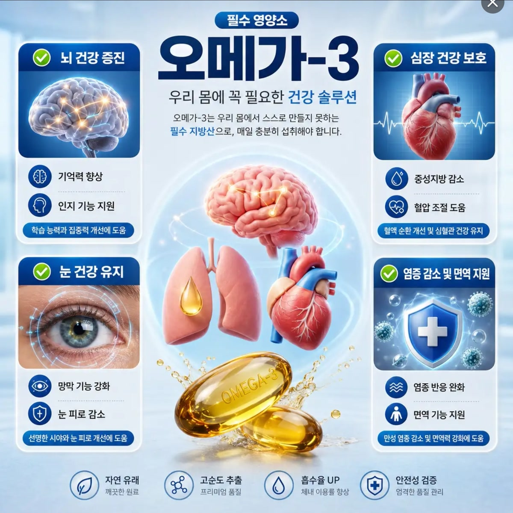
비타민D는 정상적인 뼈의 형성과 유지에 필요합니다. 본 제품은 질병의 예방 및 치료를 위한 의약품이 아닙니다. 이미지 속 일반 정보는 참고용이며, 제품 기능성은 위 네 가지 표기 범위 안에서만 인정됩니다.
궁금하면 물어보세요. 1분이면 충분합니다.
PROVE IT
진지노가 다른 오메가3와 갈라지는 지점입니다. 시작할 때 내 비율을 재고, 120일 뒤 다시 잽니다. 아래 버튼을 꾹 누르고 있으면 균형이 돌아옵니다.
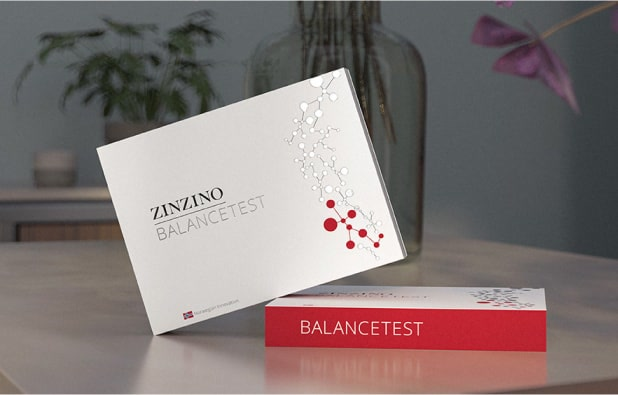
STEP 01
집에서 손끝 혈액 몇 방울이면 됩니다. 독립 검사기관이 분석합니다.
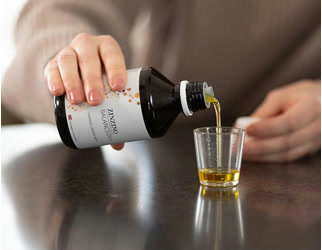
STEP 02
체중에 맞춘 양을 식사와 함께. 오렌지 레몬 민트 향의 액상입니다.
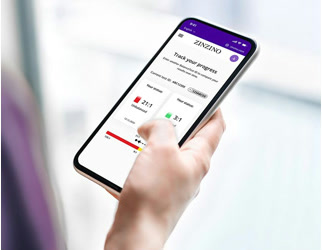
STEP 03
120일 뒤 재검사. 달라진 비율을 앱에서 숫자로 확인합니다.
STEP 04
돌아온 균형을 일상으로 지킵니다. 필요한 만큼만, 꾸준히.
BEFORE / AFTER
왼쪽은 시작할 때, 오른쪽은 120일 뒤. 오메가 6:3 비율과 보호 지수가 색과 숫자로 바뀌는 걸 직접 확인합니다.
진지노 밸런스 제품을 섭취한 고객과 파트너의 95%가 120일 뒤 약 3:1에 도달했습니다.
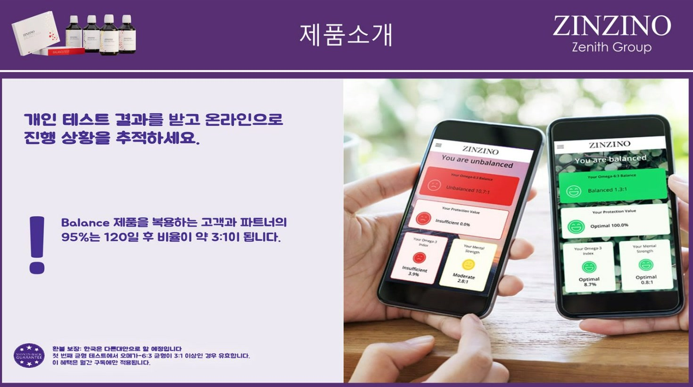
진지노 회사 자료 기준. 개인차가 있을 수 있습니다.
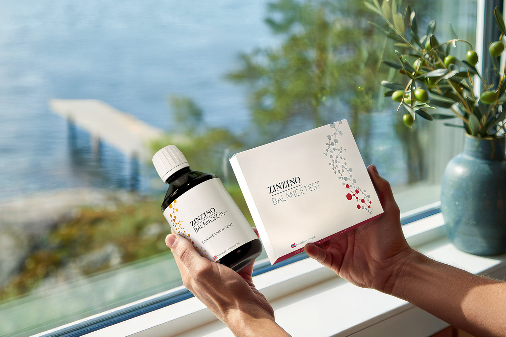
START SET
밸런스 오일 + 밸런스 테스트. 검사 두 번이 포함된 구성으로 시작하면 120일의 변화를 수치로 남길 수 있습니다. 구성과 가격은 상담에서 바로 안내해 드립니다.
카카오톡으로 구성 물어보기TEST KITS
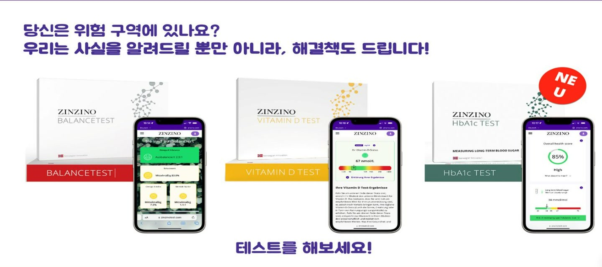
FOR YOU
성인 기준 하루 12ml 안팎. 체중에 맞춘 양은 상담에서 알려드립니다.
아침이나 저녁 식사에 곁들여 드세요. 샐러드와 요거트에 섞어도 좋습니다.
개봉 후에는 냉장 보관하세요. 오렌지 레몬 민트 향의 액상입니다.
100+
진출 국가
180만+
누적 밸런스 테스트
FOS
지속 가능 수산물 인증
쾰른리스트
안티도핑 검사 통과
수치는 진지노 회사 자료 기준입니다.
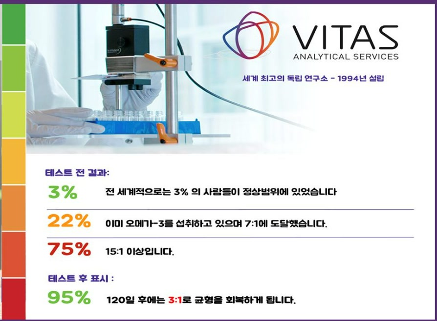
180만 건의 데이터
모든 검사는 1994년 설립된 노르웨이 독립 연구소 VITAS에서 분석합니다. 진지노가 검사 결과를 만지지 않습니다.
ATHLETES
도핑 검사를 매년 통과해야 하는 선수들이 진지노를 고릅니다. 밸런스 오일은 안티도핑 인증(쾰른리스트) 검사를 통과했습니다.
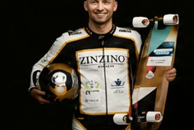
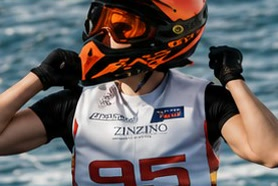
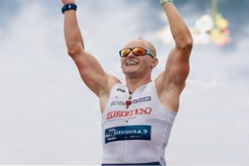
사진 출처: 진지노 글로벌 자료. 선수 후원 현황은 시기에 따라 달라질 수 있습니다.
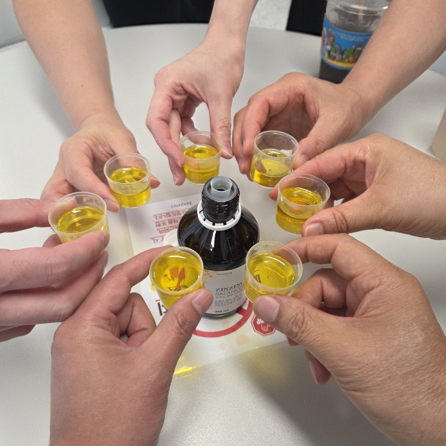
Q&A
세 가지가 다릅니다. 캡슐이 아니라 흡수가 빠른 액상 TG 형태이고, 올리브 폴리페놀이 산화를 막으며, 검사로 전과 후를 비교합니다. 효과를 몸으로 못 느껴도 숫자로 확인할 수 있습니다.
오렌지 레몬 민트 향의 액상이라 캡슐 트림 부담이 없습니다. 샐러드나 요거트에 섞어 먹어도 됩니다.
하루로 나누면 커피 한 잔보다 적습니다. 검사가 포함된 구성은 상담에서 안내해 드립니다.
집에서 손끝 채혈로 끝납니다. 키트를 우편으로 보내면 독립 검사기관이 분석하고, 결과는 온라인으로 확인합니다.
성인 기준 하루 12ml 안팎을 식사와 함께 한 스푼이면 끝입니다. 정확한 양은 몸무게 기준으로 정하며, 상담에서 바로 계산해 드립니다.
체중에 맞춰 양을 조절하면 온 가족이 함께 먹는 액상 오일입니다. 연령과 상황별 기준은 상담에서 안내해 드립니다.
MORE
자주 묻는 것들을 글로 정리해 두었습니다.
VIDEO
영상 다시 보시면 그 이유가 정리 됩니다.
영상 출처: 진지노밸런스랩 유튜브 채널
회원가입부터 첫 주문까지 파트너가 같이 진행해 드립니다. 혼자 헤매실 일 없습니다.
BUSINESS
한 번 써본 사람이 다시 사는 제품, 스웨덴에서 시작해 21년을 쌓은 나스닥 상장회사. 대한민국은 이제 막 문을 열었습니다.
재구매율과 회사 정보는 진지노 회사 자료 기준입니다. 본 안내는 소득을 보장하지 않습니다.